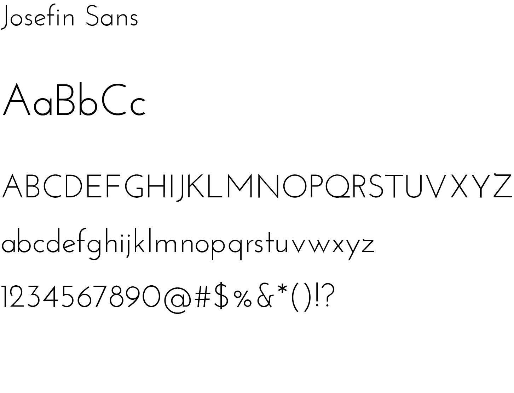

STELLAR
Overview
This is my final project at General Assembly. The demo log-in account is b@b.com and the password is 123456. It is a social media web application for users to discover when and where is most optimized for stargazing. Used a third party weather API to query their searches and their geolocation using ajax request. In response, it will display the moon cycle of the day, cloud coverage, and the current temp of the location. Users are able to upload their astrophotography as well, and used Google Maps API to render the location of the photographs users have uploaded.
Role
Full Stack Development
Technology
Ruby on Rails
HTML/ CSS/ JS
jQuery
Semantic-UI
PostgreSQL
Adobe Photoshop
Balsamiq
AccuWeather API
User Stories
I first came up with the user stories to summarize the key features I wanted to include in this web application
- Search: the weather condition of any location using search input or user's geolocation.
- Weather forecast: moon cycle, temperature, cloud coverage, and light pollution map.
- Share: users are able to sign up and share their stargazing photographs.
- Socialize: users are also able to comment on other user's uploaded images.
And then based on the key features, the wireframe screens were made with Balsamiq.
Wireframes

Visual Design
The goal of the visual design is to turn the wireframe into high-fidelity visuals for presentation. The general style of the design was based on minimalist aesthetics.
Type
Display Type
Body Type
